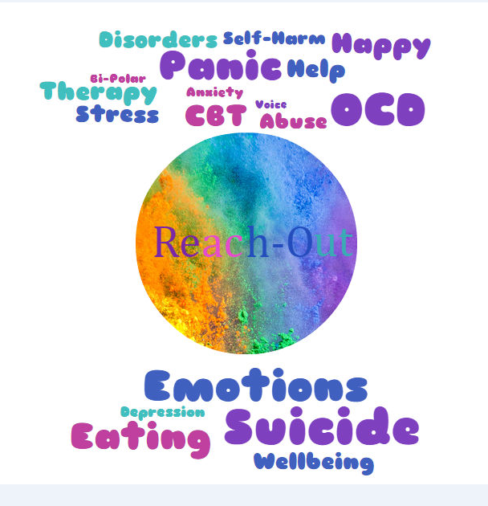

Reach Out


Who are we?
We are 3RD year students in Kishoge Community College. Our names are Emma, Josh and Akhil. We are doing our Coding Junior Cert Project this year and we have decided to create this website on a topic we are very passioniate about.
What is mental health?
Mental health is more than the absence of mental ill health, but is something that everybody experiences over their lifetime. The World Health Organisation defines mental health as a “state of well-being in which every individual realises his or her own potential, can cope with the normal stresses of life, can work productively and fruitfully, and is able to make a contribution to his or her community.”
It is normal and natural to feel down at times. Problems you may encounter might range from general everyday worries or low periods in your life, to more serious long-term conditions. One in four of us will experience a mental health difficulty in our lifetime. Everyone is different and how we respond to mental health difficulties can vary from person to person.
Wellbeing may be compromised when negative and painful emotions are extreme or very long-lasting and interfere with the person’s ability to function in daily life. For some people it may be difficult to talk about mental health, but it can help to talk about how you are feeling. People you can talk to might include friends, family, counsellor a GP.
If you need help now you could talk to your GP or call a helpline.
-Source:mental health ireland
http://www.mentalhealthireland.ie/what-is-mental-health/